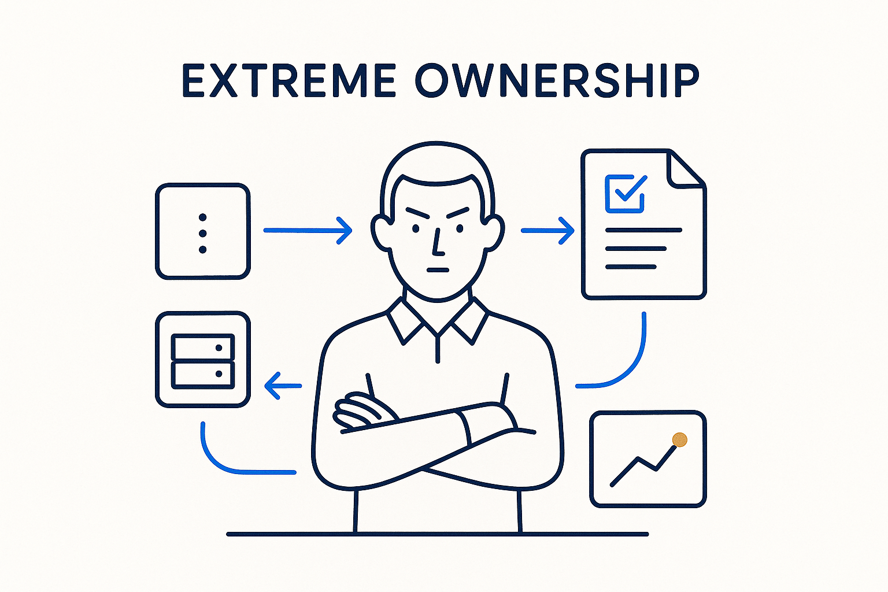

Take full responsibility for your part of the data chain — no excuses, no 'not my system' — and be able to show, in machine-readable form, what was agreed and whether it's being met.

> Take full responsibility for your part of the data chain — no excuses, no 'not my system' — and be able to show, in machine-readable form, what was agreed and whether it's being met.
Extreme ownership is taking full responsibility for your part of the chain, without hedging. Not “the source was late,” not “that’s not my system” — but owning the outcome and the interfaces around it. The idea comes from the book *Extreme Ownership* (Jocko Willink and Leif Babin): leaders own everything in their world, and the moment blame moves outward, improvement stops. In a data landscape of many systems and many teams, that stance is what keeps the seams from becoming everyone-else’s-problem.
Ownership, contracts and accountability are one idea seen from three sides. Ownership is the stance; a contract is the explicit, agreed interface; accountability is being measured against it. To own your part credibly you must be in full control of it *and* able to explain — in machine-readable form — what was agreed and how it is measured. A promise you can’t express as data and monitor is not ownership, it’s hope.
That is the BTM version of the idea: not a motivational poster, but ownership made checkable. Structure the agreement, monitor it continuously, and let the record show whether you kept your word. No excuses works only when the evidence is in the open.
Where it lives: the signature principle of Breakthrough Modeling — own your part, and prove it in metadata.